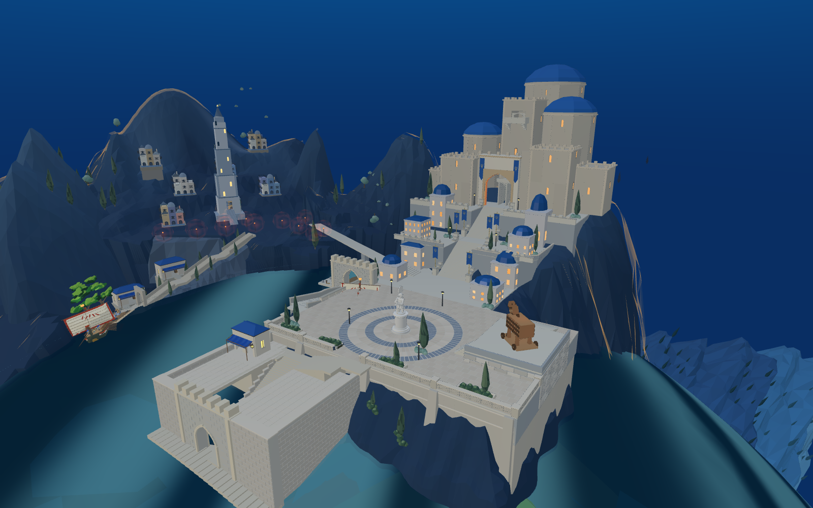
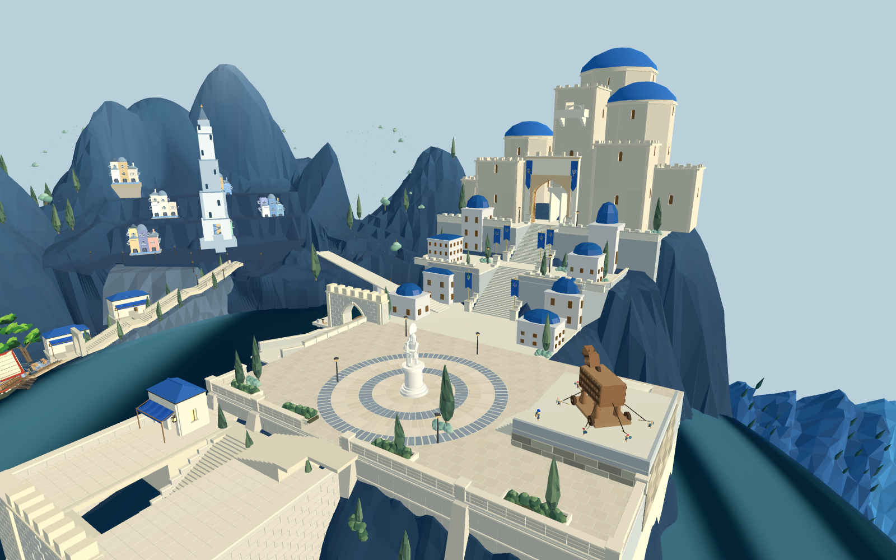

前港新增砌石、墙顶收边、阶梯侧护栏及平台铺装，经Blender处理后接回Web和Godot候选。最高一级增加平坦转向平台，路线进入平台内部，修复沿边界采样导致的落脚碰撞。



原短剑兵携装备完成149/149段码头→拱门→阶梯→转折→广场路线，位移26.5米。验证保留0.01米/2度步进碰撞检查。未验证船舶跳板、战斗或其他角色完整行程。
前港整体仍偏方整、与山体结合不足，目标图中的侧台层次和植被尚未完成；主堡和旧城整体也未达目标。新增收边62788三角形、两次绘制，完整场景性能尚待收口。当前仍为候选，默认入口未替换。